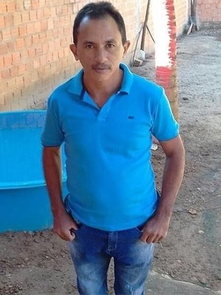

Augusto
Wolfart
Altmayer
Olá, me chamo Augusto, seja bem-vindo ao meu portfólio. Estou cursando Ciencias da Computação e quero trabalhar com Java.

scroll
Olá, me chamo Augusto, seja bem-vindo ao meu portfólio. Estou cursando Ciencias da Computação e quero trabalhar com Java.

Estudo Computação no terceiro semestre, com objetivo de trabalhar com Java. Meu interesse por tecnologia começou com a curiosidade de entender como sistemas funcionam, atrelado à facilidade que sempre tive com lógica.
Tenho experiência com Python, Unity e Java. Atualmente aprendendo HTML, CSS e JavaScript na prática, construindo este portfólio como exercício real.
Busco uma oportunidade de estágio onde possa contribuir e crescer junto com um time de tecnologia.
Responsável por prestar suporte às atividades operacionais e administrativas do centro de distribuição. Atua no controle de documentos, organização de informações, atendimento a fornecedores e transportadoras, garantindo a fluidez dos processos logísticos.
Desenvolvi base sólida em trabalho em equipe e cooperação. Responsável por apoiar rotinas do setor, priorizando cumprimento das normas organizacionais e ética profissional. Consolidei postura proativa dentro da cultura colaborativa da organização.


SEMESTRE_1
SEMESTRE_2
SEMESTRE_3
SEMESTRE_4
SEMESTRE_8
SEMESTRE_7
SEMESTRE_6
SEMESTRE_5
Atualmente no 3º semestre de 8
Estou aberto a oportunidades de estágio e projetos. Escolha o canal mais conveniente para você.